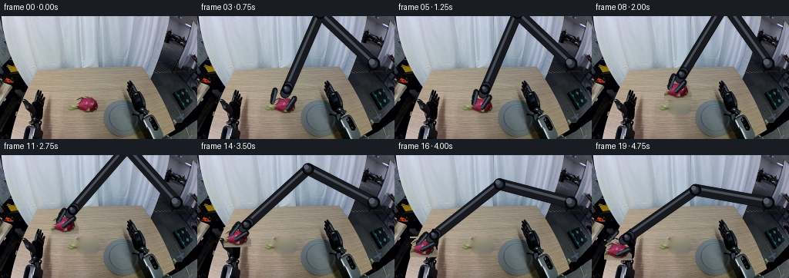
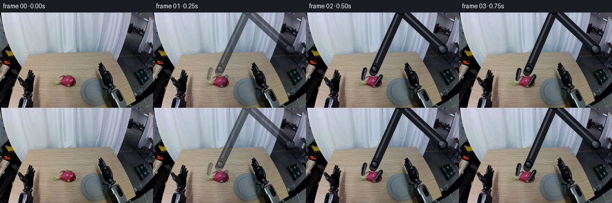

CODING AGENTS AS PIXEL WORLD MODELS
traex/DeepSeek-V4.1-Flash · common50_0039
点击播放 · 原生 RGB 像素
逐轮保存的候选
回放视频、检查图与代码变化。
每份候选均可单独播放。实际图片检查记录在下方工具轨迹中。
候选 01播放与检查图
点击播放 · 原生 RGB 像素


展开代码变化
--- 上一保存版本
+++ 本次保存版本
@@ -0,0 +1,465 @@
+from __future__ import annotations
+
+import math
+from pathlib import Path
+
+import numpy as np
+from PIL import Image, ImageDraw, ImageFilter
+
+import artifact_io
+
+
+CASE_DIR = Path(__file__).resolve().parent
+WIDTH = 256
+HEIGHT = 160
+FRAME_COUNT = 20
+
+
+def smoothstep(value: float) -> float:
+ value = min(1.0, max(0.0, value))
+ return value * value * (3.0 - 2.0 * value)
+
+
+def ellipse_alpha(
+ xx: np.ndarray,
+ yy: np.ndarray,
+ cx: float,
+ cy: float,
+ rx: float,
+ ry: float,
+ feather: float = 1.2,
+) -> np.ndarray:
+ radius = np.sqrt(((xx - cx) / rx) ** 2 + ((yy - cy) / ry) ** 2)
+ return np.clip((1.0 - radius) * (min(rx, ry) / feather), 0.0, 1.0)
+
+
+def make_background_plate(image: np.ndarray) -> np.ndarray:
+ """Remove the source fruit and its contact shadow with a smooth table fill."""
+ plate = image.astype(np.float32).copy()
+ yy, xx = np.mgrid[:HEIGHT, :WIDTH]
+
+ body = ellipse_alpha(xx, yy, 113.5, 114.3, 16.2, 11.2, 1.4)
+ lower = ellipse_alpha(xx, yy, 112.5, 121.0, 12.8, 6.2, 1.4)
+ shadow = ellipse_alpha(xx, yy, 113.0, 123.8, 14.8, 4.4, 1.5)
+ removal = np.maximum.reduce([body, lower, 0.55 * shadow])
+
+ # The table is nearly planar, so a horizontal boundary interpolation is a
+ # stable first estimate. Diffusion removes the remaining seam without
+ # inventing object-like detail.
+ x_left, x_right = 90, 139
+ for y in range(101, 130):
+ left = plate[y, x_left].copy()
+ right = plate[y, x_right].copy()
+ for x in range(x_left + 1, x_right):
+ if removal[y, x] > 0.05:
+ u = (x - x_left) / float(x_right - x_left)
+ plate[y, x] = (1.0 - u) * left + u * right
+
+ known = removal < 0.08
+ work = plate.copy()
+ for _ in range(56):
+ average = (
+ np.roll(work, 1, axis=0)
+ + np.roll(work, -1, axis=0)
+ + np.roll(work, 1, axis=1)
+ + np.roll(work, -1, axis=1)
+ ) * 0.25
+ work[104:129, 96:132] = average[104:129, 96:132]
+ work[104:129, 96:132][known[104:129, 96:132]] = plate[104:129, 96:132][
+ known[104:129, 96:132]
+ ]
+
+ blend = np.clip(removal * 1.35, 0.0, 1.0)[..., None]
+ plate = plate * (1.0 - blend) + work * blend
+ plate[removal < 0.04] = image.astype(np.float32)[removal < 0.04]
+ return np.clip(plate, 0, 255).astype(np.uint8)
+
+
+def make_fruit_sprite(image: np.ndarray) -> tuple[np.ndarray, np.ndarray, tuple[int, int]]:
+ """Return an antialiased RGBA sprite and its center in source coordinates."""
+ x0, y0, x1, y1 = 96, 101, 132, 128
+ patch = image[y0:y1, x0:x1].astype(np.float32)
+ yy, xx = np.mgrid[y0:y1, x0:x1]
+
+ body = ellipse_alpha(xx, yy, 113.6, 114.1, 13.6, 9.3, 1.15)
+ lower = ellipse_alpha(xx, yy, 112.4, 120.4, 10.3, 4.5, 1.15)
+ alpha = np.maximum(body, lower)
+
+ # Preserve the naturally irregular fruit silhouette where its colored
+ # scales extend just beyond the main ellipsoid.
+ r, g, b = patch[..., 0], patch[..., 1], patch[..., 2]
+ colored = (r > g * 1.10) & (r > b * 1.03) & (r > 48)
+ grown = colored.copy()
+ for _ in range(2):
+ grown = (
+ grown
+ | np.roll(grown, 1, 0)
+ | np.roll(grown, -1, 0)
+ | np.roll(grown, 1, 1)
+ | np.roll(grown, -1, 1)
+ )
+ alpha = np.maximum(alpha, grown.astype(np.float32) * 0.92)
+ alpha = np.clip(alpha, 0.0, 1.0)
+ rgba = np.dstack([patch, alpha * 255.0]).astype(np.uint8)
+ return rgba, alpha, ((x0 + x1 - 1) // 2, (y0 + y1 - 1) // 2)
+
+
+def transform_sprite(
+ sprite: np.ndarray, angle_deg: float, scale: float = 1.0
+) -> tuple[np.ndarray, np.ndarray]:
+ image = Image.fromarray(sprite, "RGBA")
+ if abs(scale - 1.0) > 1e-5:
+ new_size = (max(1, round(image.width * scale)), max(1, round(image.height * scale)))
+ image = image.resize(new_size, Image.Resampling.BICUBIC)
+ if abs(angle_deg) > 1e-5:
+ image = image.rotate(angle_deg, resample=Image.Resampling.BICUBIC, expand=False)
+ arr = np.asarray(image).astype(np.float32)
+ return arr[..., :3], arr[..., 3] / 255.0
+
+
+def composite_sprite(
+ canvas: np.ndarray,
+ rgb: np.ndarray,
+ alpha: np.ndarray,
+ center: tuple[float, float],
+) -> np.ndarray:
+ h, w = alpha.shape
+ cx, cy = center
+ left = int(round(cx - (w - 1) * 0.5))
+ top = int(round(cy - (h - 1) * 0.5))
+ x0, y0 = max(0, left), max(0, top)
+ x1, y1 = min(WIDTH, left + w), min(HEIGHT, top + h)
+ if x1 <= x0 or y1 <= y0:
+ return canvas
+ sx0, sy0 = x0 - left, y0 - top
+ sx1, sy1 = sx0 + (x1 - x0), sy0 + (y1 - y0)
+ a = alpha[sy0:sy1, sx0:sx1, None]
+ dst = canvas[y0:y1, x0:x1].astype(np.float32)
+ src = rgb[sy0:sy1, sx0:sx1].astype(np.float32)
+ canvas[y0:y1, x0:x1] = np.clip(dst * (1.0 - a) + src * a, 0, 255).astype(np.uint8)
+ return canvas
+
+
+def draw_soft_shadow(
+ canvas: np.ndarray,
+ center: tuple[float, float],
+ lift: float,
+ opacity: float,
+) -> np.ndarray:
+ yy, xx = np.mgrid[:HEIGHT, :WIDTH]
+ cx, cy = center
+ spread = 1.0 + 0.45 * lift
+ a = ellipse_alpha(xx, yy, cx, cy + 8.5, 13.0 * spread, 3.6 * spread, 2.0)
+ a *= opacity * (1.0 - 0.52 * lift)
+ shadow = np.zeros((HEIGHT, WIDTH), np.float32)
+ shadow[:] = a
+ shadow_img = Image.fromarray((shadow * 255).astype(np.uint8), "L").filter(
+ ImageFilter.GaussianBlur(1.3 + 1.2 * lift)
+ )
+ a = np.asarray(shadow_img).astype(np.float32) / 255.0
+ tint = np.array([45.0, 34.0, 31.0], np.float32)
+ dst = canvas.astype(np.float32)
+ out = dst * (1.0 - a[..., None] * 0.72) + tint * (a[..., None] * 0.72)
+ return np.clip(out, 0, 255).astype(np.uint8)
+
+
+def solve_two_link(
+ base: np.ndarray, target: np.ndarray, lengths: tuple[float, float]
+) -> tuple[np.ndarray, np.ndarray]:
+ delta = target - base
+ distance = float(np.linalg.norm(delta))
+ distance = max(abs(lengths[0] - lengths[1]) + 0.2, min(distance, sum(lengths) - 0.2))
+ direction = delta / max(float(np.linalg.norm(delta)), 1e-6)
+ along = (lengths[0] ** 2 - lengths[1] ** 2 + distance**2) / (2.0 * distance)
+ height = math.sqrt(max(0.0, lengths[0] ** 2 - along**2))
+ elbow_line = base + direction * along
+ normal = np.array([-direction[1], direction[0]])
+ elbow_a = elbow_line + normal * height
+ elbow_b = elbow_line - normal * height
+ elbow = elbow_a if elbow_a[1] < elbow_b[1] else elbow_b
+ return elbow, base + direction * distance
+
+
+def draw_capsule(
+ draw: ImageDraw.ImageDraw,
+ p0: np.ndarray,
+ p1: np.ndarray,
+ radius: float,
+ fill: tuple[int, int, int],
+ outline: tuple[int, int, int],
+ scale: int,
+) -> None:
+ a = tuple((p0 * scale).round().astype(int))
+ b = tuple((p1 * scale).round().astype(int))
+ width = max(1, int(round(radius * 2 * scale)))
+ draw.line([a, b], fill=outline, width=width + max(2, scale))
+ draw.line([a, b], fill=fill, width=width)
+ for p in (p0, p1):
+ c = tuple((p * scale).round().astype(int))
+ rr = radius * scale
+ draw.ellipse(
+ [c[0] - rr, c[1] - rr, c[0] + rr, c[1] + rr],
+ fill=fill,
+ outline=outline,
+ width=max(1, scale),
+ )
+
+
+def draw_arm(
+ shoulder: np.ndarray,
+ elbow: np.ndarray,
+ wrist: np.ndarray,
+ grip_open: float,
+ alpha: float,
+ draw_fingers: bool,
+) -> Image.Image:
+ scale = 4
+ layer = Image.new("RGBA", (WIDTH * scale, HEIGHT * scale), (0, 0, 0, 0))
+ d = ImageDraw.Draw(layer)
+ dark = (9, 10, 13, 255)
+ body = (24, 26, 31, 255)
+ edge = (43, 46, 54, 255)
+ highlight = (72, 77, 87, 255)
+
+ # Main matte-black links.
+ draw_capsule(d, shoulder, elbow, 7.0, body, dark, scale)
+ draw_capsule(d, elbow, wrist, 6.2, body, dark, scale)
+ draw_capsule(
+ d,
+ shoulder + np.array([-1.5, -2.5]),
+ elbow + np.array([-1.5, -2.5]),
+ 1.25,
+ highlight,
+ highlight,
+ scale,
+ )
+ draw_capsule(
+ d,
+ elbow + np.array([-1.3, -2.0]),
+ wrist + np.array([-1.3, -2.0]),
+ 0.95,
+ highlight,
+ highlight,
+ scale,
+ )
+
+ # Compact wrist and palm.
+ u = wrist - elbow
+ u /= max(float(np.linalg.norm(u)), 1e-6)
+ v = np.array([-u[1], u[0]])
+ palm0 = wrist - u * 4.0
+ palm1 = wrist + u * 6.0
+ draw_capsule(d, palm0, palm1, 6.2, edge, dark, scale)
+
+ # Joint hardware.
+ for p, r in ((shoulder, 8.2), (elbow, 7.5), (wrist, 6.4)):
+ c = tuple((p * scale).round().astype(int))
+ rr = r * scale
+ d.ellipse(
+ [c[0] - rr, c[1] - rr, c[0] + rr, c[1] + rr],
+ fill=(31, 34, 40, 255),
+ outline=(5, 6, 9, 255),
+ width=2 * scale,
+ )
+ rr2 = (r - 2.3) * scale
+ d.ellipse(
+ [c[0] - rr2, c[1] - rr2, c[0] + rr2, c[1] + rr2],
+ fill=(48, 52, 61, 255),
+ outline=(16, 18, 22, 255),
+ width=max(1, scale),
+ )
+ hl = tuple(((p + np.array([-r * 0.30, -r * 0.32])) * scale).round().astype(int))
+ rr3 = (r - 4.4) * scale
+ d.ellipse([hl[0] - rr3, hl[1] - rr3, hl[0] + rr3, hl[1] + rr3], fill=(86, 92, 104, 255))
+
+ if draw_fingers:
+ finger_root = wrist + u * 7.0
+ finger_tip = wrist + u * 23.0
+ half = grip_open * 0.5
+ for side in (-1.0, 1.0):
+ root = finger_root + v * (side * (half + 2.0))
+ bend = wrist + u * 15.0 + v * (side * (half + 1.0))
+ tip = finger_tip + v * (side * max(3.2, half - 1.2))
+ draw_capsule(d, root, bend, 3.1, body, dark, scale)
+ draw_capsule(d, bend, tip, 2.6, body, dark, scale)
+ draw_capsule(
+ d,
+ root - v * side * 0.8,
+ tip - v * side * 0.8,
+ 0.7,
+ highlight,
+ highlight,
+ scale,
+ )
+ # Small inward grip pads.
+ pad = tip - v * side * 1.2
+ c = tuple((pad * scale).round().astype(int))
+ rr = 1.8 * scale
+ d.ellipse([c[0] - rr, c[1] - rr, c[0] + rr, c[1] + rr], fill=(67, 70, 76, 255))
+
+ if alpha < 0.999:
+ arr = np.asarray(layer).copy()
+ arr[..., 3] = (arr[..., 3].astype(np.float32) * alpha).astype(np.uint8)
+ layer = Image.fromarray(arr, "RGBA")
+ return layer.resize((WIDTH, HEIGHT), Image.Resampling.LANCZOS)
+
+
+def paste_rgba(canvas: np.ndarray, layer: Image.Image) -> np.ndarray:
+ arr = np.asarray(layer).astype(np.float32)
+ a = arr[..., 3:4] / 255.0
+ out = canvas.astype(np.float32) * (1.0 - a) + arr[..., :3] * a
+ return np.clip(out, 0, 255).astype(np.uint8)
+
+
+def keyframe_pose(frame: int) -> tuple[np.ndarray, float, float, float, bool]:
+ """Return fruit center, arm wrist, gripper opening, arm opacity, held."""
+ fruit_keys = {
+ 0: (113.5, 115.0),
+ 5: (113.5, 115.0),
+ 6: (119.0, 108.5),
+ 7: (116.0, 101.5),
+ 8: (111.0, 95.0),
+ 9: (104.0, 90.0),
+ 10: (95.0, 87.5),
+ 11: (84.0, 89.0),
+ 12: (72.0, 93.0),
+ 13: (61.0, 99.0),
+ 14: (51.0, 106.0),
+ 15: (43.0, 113.0),
+ 16: (37.0, 118.5),
+ 17: (33.5, 121.5),
+ 19: (33.0, 122.5),
+ }
+ wrist_keys = {
+ 0: (171.0, 110.0),
+ 1: (158.0, 110.0),
+ 2: (145.0, 111.0),
+ 3: (136.0, 112.0),
+ 4: (130.0, 113.5),
+ 5: (129.0, 113.5),
+ 6: (138.0, 108.0),
+ 7: (136.0, 101.0),
+ 8: (131.0, 94.5),
+ 9: (124.0, 90.0),
+ 10: (115.0, 87.5),
+ 11: (104.0, 89.0),
+ 12: (92.0, 93.0),
+ 13: (81.0, 99.0),
+ 14: (71.0, 106.0),
+ 15: (63.0, 113.0),
+ 16: (57.0, 118.5),
+ 17: (54.0, 121.5),
+ 18: (56.0, 121.0),
+ 19: (66.0, 117.0),
+ }
+ keys = sorted(fruit_keys)
+ lo = max(k for k in keys if k <= frame)
+ hi = min(k for k in keys if k >= frame)
+ if hi == lo:
+ fruit = np.array(fruit_keys[lo], np.float32)
+ else:
+ u = smoothstep((frame - lo) / float(hi - lo))
+ fruit = np.array(fruit_keys[lo], np.float32) * (1.0 - u) + np.array(
+ fruit_keys[hi], np.float32
+ ) * u
+
+ wkeys = sorted(wrist_keys)
+ lo = max(k for k in wkeys if k <= frame)
+ hi = min(k for k in wkeys if k >= frame)
+ if hi == lo:
+ wrist = np.array(wrist_keys[lo], np.float32)
+ else:
+ u = smoothstep((frame - lo) / float(hi - lo))
+ wrist = np.array(wrist_keys[lo], np.float32) * (1.0 - u) + np.array(
+ wrist_keys[hi], np.float32
+ ) * u
+
+ if frame <= 4:
+ opening = 25.0 - max(0, frame - 2) * 1.5
+ elif frame == 5:
+ opening = 15.0
+ elif frame <= 16:
+ opening = 12.0
+ elif frame == 17:
+ opening = 16.0
+ else:
+ opening = 24.0
+
+ opacity = 0.0 if frame == 0 else (0.38 if frame == 1 else 1.0)
+ held = 5 <= frame <= 17
+ return fruit, wrist, opening, opacity, held
+
+
+def render_frame(
+ frame_index: int,
+ source: np.ndarray,
+ plate: np.ndarray,
+ sprite: np.ndarray,
+) -> np.ndarray:
+ if frame_index == 0:
+ return source.copy()
+
+ fruit, wrist_target, opening, opacity, held = keyframe_pose(frame_index)
+ lift = 0.0
+ if frame_index >= 6:
+ lift = float(
+ np.clip(
+ min(
+ (frame_index - 5) / 5.0,
+ (18 - frame_index) / 5.0,
+ ),
+ 0.0,
+ 1.0,
+ )
+ )
+ lift = smoothstep(lift)
+
+ canvas = plate.copy()
+ canvas = draw_soft_shadow(canvas, (fruit[0], fruit[1] + 2.0 * lift), lift, 0.45)
+
+ shoulder = np.array([229.0, 62.0], np.float32)
+ lengths = (96.0, 108.0)
+ u_guess = np.array([-1.0, 0.05], np.float32)
+ wrist = wrist_target.copy()
+ for _ in range(3):
+ elbow, wrist = solve_two_link(shoulder, wrist_target, lengths)
+ u = wrist - elbow
+ u /= max(float(np.linalg.norm(u)), 1e-6)
+ wrist_target_effective = fruit - u * 20.0
+ wrist_target_effective = np.array(wrist_target_effective, np.float32)
+ elbow, wrist = solve_two_link(shoulder, wrist_target_effective, lengths)
+
+ arm = draw_arm(shoulder, elbow, wrist, opening, opacity, draw_fingers=False)
+ canvas = paste_rgba(canvas, arm)
+
+ # A gentle roll sells the rigid body while the gripper carries it.
+ roll = 0.0
+ if frame_index >= 6:
+ roll = float(np.interp(frame_index, [6, 10, 14, 18], [-2.0, 5.0, 3.0, -2.0]))
+ sprite_rgb, sprite_alpha = transform_sprite(sprite, roll, 1.0)
+ canvas = composite_sprite(canvas, sprite_rgb, sprite_alpha, (fruit[0], fruit[1]))
+
+ fingers = draw_arm(shoulder, elbow, wrist, opening, opacity, draw_fingers=True)
+ canvas = paste_rgba(canvas, fingers)
+
+ # Slight cool reflection from the workspace keeps the added geometry in
+ # the same photographic lighting family as the source.
+ if opacity > 0.0:
+ tint = np.array([0.985, 0.995, 1.015], np.float32)
+ canvas = np.clip(canvas.astype(np.float32) * tint, 0, 255).astype(np.uint8)
+ return canvas
+
+
+def main() -> None:
+ source = np.asarray(Image.open(CASE_DIR / "first_frame.png").convert("RGB"), np.uint8)
+ plate = make_background_plate(source)
+ sprite, _, _ = make_fruit_sprite(source)
+ frames = np.empty((FRAME_COUNT, HEIGHT, WIDTH, 3), np.uint8)
+ for index in range(FRAME_COUNT):
+ frames[index] = render_frame(index, source, plate, sprite)
+ frames[0] = source
+ artifact_io.save(frames, CASE_DIR)
+
+
+if __name__ == "__main__":
+ main()
可观测工具轨迹
实际执行的命令与返回图片。
命令 1exit 0
/bin/bash -c "pwd && rg --files -g 'prompt.txt' -g 'GENERATION_RULES.md' -g 'first_frame.png' -g '"'!*.mp4'"'"
命令 2exit 0
/bin/bash -c 'cat prompt.txt'
命令 3exit 0
/bin/bash -c 'cat GENERATION_RULES.md'
命令 4exit 0
/bin/bash -c 'file first_frame.png && identify first_frame.png 2>/dev/null || true'
命令 5exit 0
/bin/bash -c 'ls -la && if [ -f task_spec.json ]; then cat task_spec.json; fi'
命令 6exit 0
/bin/bash -c "python - <<'PY'
from PIL import Image
import numpy as np
im=Image.open('first_frame.png')
print(im.mode, im.size)
a=np.asarray(im.convert('RGB'))
print(a.shape,a.dtype,a.min(),a.max(),a.mean(axis=(0,1)))
# unique colors / quantiles
for q in [0,1,5,10,25,50,75,90,95,99,100]: print(q,np.percentile(a,q,axis=(0,1)))
PY"命令 7exit 0
/bin/bash -c "python - <<'PY' import importlib.util for m in ['numpy','PIL','cv2','imageio','scipy','skimage','torch','matplotlib']: print(m, bool(importlib.util.find_spec(m))) PY"
命令 8exit 0
/bin/bash -c 'command -v chafa || command -v viu || command -v jp2 || command -v img2txt || true'
命令 9exit 0
/bin/bash -c "python - <<'PY'
from PIL import Image
import numpy as np
from sklearn.cluster import KMeans
im=np.asarray(Image.open('first_frame.png').convert('RGB'))
a=im.reshape(-1,3)
km=KMeans(n_clusters=12, random_state=0, n_init=4).fit(a[::4])
cent=km.cluster_centers_.astype(int)
cnt=np.bincount(km.predict(a),minlength=12)
for c,n in sorted(zip(cent,cnt), key=lambda x:-x[1]): print(n, tuple(c))
PY"命令 10exit 0
/bin/bash -c "python - <<'PY'
from PIL import Image
import numpy as np
im=Image.open('first_frame.png').convert('RGB').resize((64,40))
a=np.asarray(im)
# color-aware ascii: use luminance
chars=' .:-=+*#%@'
g=(.299*a[:,:,0]+.587*a[:,:,1]+.114*a[:,:,2])
for row in g:
print(''.join(chars[min(9,int(v/256*10))] for v in row))
PY"命令 11exit 0
/bin/bash -c "sed -n '1,240p' artifact_io.py"
命令 12exit 0
/bin/bash -c "python - <<'PY'
from PIL import Image
import numpy as np
from scipy import ndimage
im=np.asarray(Image.open('first_frame.png').convert('RGB')).astype(float)
r,g,b=im.transpose(2,0,1)
mx=im.max(2); mn=im.min(2); sat=(mx-mn)/(mx+1e-6)
# pink: r > g*1.15 and b maybe > g
masks={
'pink':(r>g*1.18)&(r>b*1.03)&(sat>.18)&(r>80),
'magenta':(r>g*1.3)&(b>g*1.05)&(sat>.25)&(r>70),
'green':(g>r*1.12)&(g>b*1.08)&(sat>.18)&(g>60),
'red':(r>g*1.3)&(r>b*1.3)&(sat>.25)&(r>60),
'wood':(r>g*1.08)&(g>b*1.08)&(r>70)&(r<220)&(sat>.12),
}
for name,m in masks.items():
lab,n=ndimage.label(m)
objs=ndimage.find_objects(lab)
comps=[]
for i,sl in enumerate(objs,1):
if sl is None: continue
area=(lab[sl]==i).sum()
if area>=4:
ys,xs=sl
comps.append((area,(xs.start,ys.start,xs.stop-1,ys.stop-1),tuple(np.median(im[sl][lab[sl]==i],axis=0).astype(int))))
print('\\n',name, 'pixels',m.sum())
for c in sorted(comps,reverse=True)[:25]: print(c)
PY"命令 13exit 0
/bin/bash -c "python - <<'PY'
from PIL import Image
import numpy as np
im=np.asarray(Image.open('first_frame.png').convert('RGB')).astype(float)
# downsample 2x2 nearest-ish average
im=im[:160,:256].reshape(80,2,128,2,3).mean((1,3))
r,g,b=im.transpose(2,0,1); mx=im.max(2); mn=im.min(2); sat=(mx-mn)/(mx+1e-6); lum=.299*r+.587*g+.114*b
for y in range(80):
s=''
for x in range(128):
R,G,B=r[y,x],g[y,x],b[y,x]; L=lum[y,x]; S=sat[y,x]
if R>G*1.22 and R>B*1.12 and S>.18 and R>55: c='R' if G<60 else 'P'
elif G>R*1.10 and G>B*1.04 and S>.15 and G>45: c='G'
elif R>G*1.08 and G>B*1.08 and R>65 and S>.1: c='w'
elif L<35: c=' '
elif L<60: c='.'
elif L<90: c=':'
elif L<120: c='-'
elif L<150: c='='
elif L<180: c='+'
elif L<205: c='*'
else: c='#'
s+=c
print(f'{y*2:3d} '+s)
PY"命令 14exit 0
/bin/bash -c "python - <<'PY'
from PIL import Image
import numpy as np, colorsys
im=np.asarray(Image.open('first_frame.png').convert('RGB')).astype(float)
# crop x40:190 y40:160; 2px blocks
for y0 in range(40,160,3):
s=''
for x0 in range(40,200,2):
p=im[y0:y0+3,x0:x0+2].mean((0,1))/255
r,g,b=p; mx=max(p); mn=min(p); sat=(mx-mn)/(mx+1e-9)
h,_,_=colorsys.rgb_to_hsv(r,g,b)
L=.299*r+.587*g+.114*b
if r>g*1.20 and r>b*1.12 and sat>.18: c='M' if L<.36 else 'R'
elif g>r*1.12 and g>b*1.05 and sat>.16: c='G'
elif r>g*1.10 and g>b*1.10 and sat>.10: c='w' if L>.62 else 'n'
elif b>r*1.05 and L>.60: c='B'
elif L<.08:c=' '
elif L<.17:c='.'
elif L<.28:c=':'
elif L<.42:c='-'
elif L<.56:c='='
elif L<.68:c='+'
elif L<.78:c='*'
elif L<.88:c='#'
else:c='@'
s+=c
print(f'{y0:3d} {s}')
PY"命令 15exit 1
/bin/bash -c "python - <<'PY'
from PIL import Image
import numpy as np, colorsys
im=np.asarray(Image.open('first_frame.png').convert('RGB')).astype(float)
# map selected palette by nearest RGB
pal=np.array([
[0,0,0],[20,20,24],[45,45,50],[75,75,80],[105,105,110],[130,130,135],[160,160,165],[190,195,205],[220,225,235],
[100,55,50],[140,70,65],[180,95,80],[130,40,65],[190,50,90],[230,70,120],[80,110,90],[40,130,100],[130,180,130],
[120,100,80],[160,140,120],[200,180,155]
])
labels=' .:-=+*#@abcdmMgtTWX?'
# just print exact-like crop with HSV category
for y in range(96,132):
s=''
for x in range(90,136):
r,g,b=im[y,x]/255; mx=max(r,g,b); mn=min(r,g,b); sat=(mx-mn)/(mx+1e-6); h,s,v=colorsys.rgb_to_hsv(r,g,b)
if r>g*1.18 and r>b*1.10 and sat>.22:
if g>.32 and b>.32: c='P' # pink/light
elif r>.7: c='R'
elif g<.25: c='m'
else:c='M'
elif g>r*1.08 and g>b*1.02 and sat>.12: c='g'
elif r>g*1.10 and g>b*1.06 and sat>.10: c='W' if v>.70 else 'w'
elif v<.08:c=' '
elif v<.17:c='.'
elif v<.28:c=':'
elif v<.42:c='-'
elif v<.56:c='='
elif v<.68:c='+'
elif v<.78:c='*'
elif v<.88:c='#'
else:c='@'
s+=c
print(f'{y:3d} {s}')
PY"命令 16exit 0
/bin/bash -c "python - <<'PY'
from PIL import Image
import numpy as np, colorsys
im=np.asarray(Image.open('first_frame.png').convert('RGB')).astype(float)
for y in range(96,132):
s=''
for x in range(90,136):
rr,gg,bb=im[y,x]/255.0
mx=max(rr,gg,bb); mn=min(rr,gg,bb); sat=(mx-mn)/(mx+1e-6); h,sv,v=colorsys.rgb_to_hsv(rr,gg,bb)
if rr>gg*1.18 and rr>bb*1.10 and sat>.22:
if gg>.32 and bb>.32: ch='P'
elif rr>.7: ch='R'
elif gg<.25: ch='m'
else: ch='M'
elif gg>rr*1.08 and gg>bb*1.02 and sat>.12: ch='g'
elif rr>gg*1.10 and gg>bb*1.06 and sat>.10: ch='W' if v>.70 else 'w'
elif v<.08: ch=' '
elif v<.17: ch='.'
elif v<.28: ch=':'
elif v<.42: ch='-'
elif v<.56: ch='='
elif v<.68: ch='+'
elif v<.78: ch='*'
elif v<.88: ch='#'
else: ch='@'
s+=ch
print(f'{y:3d} {s}')
PY"命令 17exit 0
/bin/bash -c "python - <<'PY'
from PIL import Image
import numpy as np, colorsys
im=np.asarray(Image.open('first_frame.png').convert('RGB')).astype(float)
# make color bins for dark neutral regions to infer hardware silhouettes
for y in range(0,160,2):
s=''
for x in range(0,256,2):
rr,gg,bb=im[y:y+2,x:x+2].mean((0,1))/255.0
mx=max(rr,gg,bb); mn=min(rr,gg,bb); sat=(mx-mn)/(mx+1e-6); v=mx
if rr>gg*1.20 and rr>bb*1.10 and sat>.18: ch='M' if rr>.4 else 'm'
elif gg>rr*1.10 and gg>bb*1.03 and sat>.12: ch='G'
elif rr>gg*1.08 and gg>bb*1.08 and sat>.09: ch='w'
elif v<.045: ch=' '
elif v<.09: ch='.'
elif v<.16: ch=':'
elif v<.25: ch='-'
elif v<.36: ch='='
elif v<.49: ch='+'
elif v<.62: ch='*'
elif v<.74: ch='#'
elif v<.84: ch='%'
else: ch='@'
s+=ch
print(f'{y:3d} {s}')
PY"命令 18exit 0
/bin/bash -c "python - <<'PY'
import cv2, numpy as np
im=cv2.imread('first_frame.png')
g=cv2.cvtColor(im,cv2.COLOR_BGR2GRAY)
for t1,t2 in [(30,80),(50,120),(80,160)]:
e=cv2.Canny(g,t1,t2)
lines=cv2.HoughLinesP(e,1,np.pi/180,threshold=15,minLineLength=12,maxLineGap=3)
print('\\nCanny',t1,t2,'pixels',int((e>0).sum()))
if lines is not None:
vals=sorted([tuple(x[0]) for x in lines], key=lambda l:-((l[2]-l[0])**2+(l[3]-l[1])**2))[:50]
print(vals)
PY"命令 19exit 0
/bin/bash -c "python - <<'PY'
from PIL import Image
import numpy as np
from scipy import ndimage
im=np.asarray(Image.open('first_frame.png').convert('RGB')).astype(float)
L=.299*im[:,:,0]+.587*im[:,:,1]+.114*im[:,:,2]
for th in [20,30,40,50,60,70,80,90,100,120]:
m=L<th
# remove tiny
lab,n=ndimage.label(m, structure=np.ones((3,3)))
sizes=ndimage.sum(m,lab,range(1,n+1))
comps=[]
for i,sl in enumerate(ndimage.find_objects(lab),1):
if sl is None: continue
a=sizes[i-1]
if a>=10:
ys,xs=sl; comps.append((int(a),(xs.start,ys.start,xs.stop-1,ys.stop-1)))
print('th',th,'pix',m.sum(),'n',n,'large',len(comps))
print(sorted(comps,reverse=True)[:15])
PY"命令 20exit 0
/bin/bash -c "python - <<'PY'
from PIL import Image
import numpy as np, cv2
im=np.asarray(Image.open('first_frame.png').convert('RGB'))
g=cv2.cvtColor(im,cv2.COLOR_RGB2GRAY)
for name,(x0,y0,x1,y1) in {'left':(0,45,85,160),'right':(145,0,256,160),'fruit':(75,75,155,145)}.items():
crop=g[y0:y1,x0:x1]
e=cv2.Canny(crop,40,100)
print('\\n====',name,'====')
sy=max(1, round((y1-y0)/55)); sx=max(1,round((x1-x0)/90))
for y in range(0,y1-y0,sy):
s=''
for x in range(0,x1-x0,sx):
block=e[y:y+sy,x:x+sx]
v=block.mean()
# also mean lum
l=crop[y:y+sy,x:x+sx].mean()
if v>70: ch='#'
elif v>35: ch='*'
elif v>15: ch='+'
elif l<40: ch='@'
elif l<80: ch='='
elif l<120: ch='-'
elif l<160: ch=':'
elif l<200: ch='.'
else: ch=' '
s+=ch
print(f'{y0+y:3d} {s}')
PY"命令 21exit 0
/bin/bash -c "python - <<'PY'
import cv2, numpy as np
from PIL import Image
im=np.asarray(Image.open('first_frame.png').convert('RGB'))
g=cv2.cvtColor(im,cv2.COLOR_RGB2GRAY)
# print grayscale numeric crop x90:140 y100:130 every pixel coarse bins
chars=' .:-=+*#%@'
for y in range(96,128):
s=''
for x in range(85,145):
v=g[y,x]
s+=chars[min(9,int(v/256*10))]
print(f'{y:3d} {s}')
print('x ruler')
print(' '+''.join(str(x//10%10) for x in range(85,145)))
print(' '+''.join(str(x%10) for x in range(85,145)))
PY"命令 22exit 0
/bin/bash -c "python - <<'PY'
from PIL import Image
import numpy as np
im=np.asarray(Image.open('first_frame.png').convert('RGB'))
# Print RGB values by sampled grid around fruit and gripper
for y in range(100,128,2):
print('y',y)
for x in range(88,144,4):
print(f'{x}:{tuple(im[y,x])}',end=' ')
print()
PY"命令 23exit 0
/bin/bash -c "python - <<'PY'
import cv2, numpy as np
from PIL import Image
im=np.asarray(Image.open('first_frame.png').convert('RGB'))
# cluster in Lab or RGB
lab=cv2.cvtColor(im,cv2.COLOR_RGB2LAB).reshape(-1,3).astype(np.float32)
crit=(cv2.TERM_CRITERIA_EPS+cv2.TERM_CRITERIA_MAX_ITER,80,0.3)
_,labels,cent=cv2.kmeans(lab,16,None,crit,8,cv2.KMEANS_PP_CENTERS)
labels=labels.reshape(160,256)
cent_rgb=cv2.cvtColor(cent.reshape(1,-1,3).astype(np.uint8),cv2.COLOR_LAB2RGB).reshape(-1,3)
print('clusters:')
for i,(c,n) in enumerate(zip(cent_rgb,np.bincount(labels.ravel(),minlength=16))): print(i,n,tuple(c))
# map cluster ids to unique chars based on luminance/color
chars='0123456789ABCDEF'
print('\\ncluster map, 2x2 blocks majority-ish')
for y in range(0,160,2):
s=''
for x in range(0,256,2):
ids=labels[y:y+2,x:x+2].ravel()
i=np.bincount(ids,minlength=16).argmax()
s+=chars[i]
print(f'{y:3d} {s}')
PY"命令 24exit 0
/bin/bash -c "python - <<'PY'
from PIL import Image
import numpy as np
im=np.asarray(Image.open('first_frame.png').convert('RGB')).astype(float)
L=.299*im[:,:,0]+.587*im[:,:,1]+.114*im[:,:,2]
for th in [20,40,60]:
print('\\nTH',th)
for y in range(0,160,4):
m=L[y:y+4].mean(0)<th
# intervals min len3
d=np.diff(np.r_[False,m,False].astype(int)); st=np.where(d==1)[0]; en=np.where(d==-1)[0]
runs=[(int(a),int(b-1)) for a,b in zip(st,en) if b-a>=3]
print(f'{y:3d}',runs)
PY"命令 25exit 0
/bin/bash -c "python - <<'PY'
from PIL import Image
import numpy as np
im=np.asarray(Image.open('first_frame.png').convert('RGB')).astype(float)
# print a sparse vector-like visualization of dark + neutral hardware: char by luminance but only area x55:205 y40:160
chars=' .:-=+*#%@'
for y in range(40,160,2):
s=''
for x in range(55,206,2):
v=im[y:y+2,x:x+2].mean()
s+=chars[min(9,int(v/256*10))]
print(f'{y:3d} {s}')
PY"命令 26exit 0
/bin/bash -c "python - <<'PY'
from PIL import Image
import numpy as np, colorsys
im=np.asarray(Image.open('first_frame.png').convert('RGB'))
# label colors in crop 20:80, 90:160 at full resolution downsample x1 y2
chars=' .:-=+*#%@'
print('LUM crop')
for y in range(90,160,2):
s=''
for x in range(20,82):
v=im[y:y+2,x].mean()
s+=chars[min(9,int(v/256*10))]
print(f'{y:3d} {s}')
print(' '+''.join(str(x//10%10) for x in range(20,82)))
print(' '+''.join(str(x%10) for x in range(20,82)))
print('COLOR crop')
for y in range(90,160,2):
s=''
for x in range(20,82):
rr,gg,bb=im[y:y+2,x].mean(0)/255.; mx=max(rr,gg,bb); mn=min(rr,gg,bb); sat=(mx-mn)/(mx+1e-6)
if rr>gg*1.2 and rr>bb*1.1 and sat>.18: ch='R'
elif gg>rr*1.10 and gg>bb*1.04 and sat>.12: ch='G'
elif rr>gg*1.08 and gg>bb*1.06 and sat>.1: ch='w'
elif mx<.08: ch=' '
elif mx<.16:ch='.'
elif mx<.25:ch=':'
elif mx<.36:ch='-'
elif mx<.49:ch='='
elif mx<.62:ch='+'
elif mx<.74:ch='*'
elif mx<.84:ch='#'
else:ch='@'
s+=ch
print(f'{y:3d} {s}')
PY"命令 27exit 0
/bin/bash -c "python - <<'PY'
from PIL import Image
import numpy as np
im=np.asarray(Image.open('first_frame.png').convert('RGB'))
chars=' .:-=+*#%@'
for y in range(0,100,2):
s=''
for x in range(140,256,1):
v=im[y:y+2,x].mean()
s+=chars[min(9,int(v/256*10))]
print(f'{y:3d} {s}')
print(' '+''.join(str(x//10%10) for x in range(140,256)))
print(' '+''.join(str(x%10) for x in range(140,256)))
PY"命令 28exit 0
/bin/bash -c "python - <<'PY'
from PIL import Image
import numpy as np
im=np.asarray(Image.open('first_frame.png').convert('RGB')).astype(float)
# RGB/lum crop x140:210 y40:100 detailed labels, every pixel but 1 char
chars=' .:-=+*#%@'
for y in range(40,100):
s=''
for x in range(140,210):
v=im[y,x].mean()
s+=chars[min(9,int(v/256*10))]
print(f'{y:3d} {s}')
print(' '+''.join(str(x//10%10) for x in range(140,210)))
print(' '+''.join(str(x%10) for x in range(140,210)))
PY"命令 29exit 0
/bin/bash -c "python - <<'PY'
import numpy as np
from PIL import Image
im=np.asarray(Image.open('first_frame.png').convert('RGB')).astype(np.float32)
# local contrast normalization maybe reveal objects
import cv2
lab=cv2.cvtColor(im.astype(np.uint8),cv2.COLOR_RGB2LAB)
L=lab[:,:,0].astype(float)
clahe=cv2.createCLAHE(clipLimit=2.0,tileGridSize=(8,8))
Ln=clahe.apply(L.astype(np.uint8))
chars=' .:-=+*#%@'
for y in range(0,160,2):
s=''
for x in range(0,256,2):
v=Ln[y:y+2,x:x+2].mean()
s+=chars[min(9,int(v/256*10))]
print(s)
PY"命令 30exit 0
/bin/bash -c "python - <<'PY'
import cv2, numpy as np
from PIL import Image
im=np.asarray(Image.open('first_frame.png').convert('RGB'))
# edge overlay, crop x85:210 y0:160, output ascii with strong edges '#' and dark ' '
g=cv2.cvtColor(im,cv2.COLOR_RGB2GRAY)
e=cv2.Canny(g,30,80)
for y in range(0,160,2):
s=''
for x in range(80,216,2):
ev=(e[y:y+2,x:x+2]>0).mean()
l=g[y:y+2,x:x+2].mean()
if ev>.45: ch='#'
elif ev>.15: ch='*'
elif l<50: ch='@'
elif l<85: ch='+'
elif l<120: ch='-'
elif l<155: ch=':'
elif l<190: ch='.'
else: ch=' '
s+=ch
print(f'{y:3d} {s}')
PY"命令 31exit 0
/bin/bash -c "python - <<'PY'
import cv2, numpy as np
from PIL import Image
im=np.asarray(Image.open('first_frame.png').convert('RGB'))
# Save annotated candidates for ourselves: Canny, CLAHE, segmentation
g=cv2.cvtColor(im,cv2.COLOR_RGB2GRAY)
e=cv2.Canny(g,40,100)
cv2.imwrite('.tmp/edges.png',e)
lab=cv2.cvtColor(im,cv2.COLOR_RGB2LAB); L=lab[:,:,0]
clahe=cv2.createCLAHE(clipLimit=3.0,tileGridSize=(4,4)).apply(L)
cv2.imwrite('.tmp/clahe.png',clahe)
# crop enlarged nearest for fruit/gripper
Image.fromarray(im[90:140,80:150]).resize((700,500),Image.Resampling.NEAREST).save('.tmp/fruit_zoom.png')
print('saved')
PY"命令 32exit 0
/bin/bash -c "python - <<'PY'
import cv2, numpy as np
from PIL import Image
im=np.asarray(Image.open('first_frame.png').convert('RGB'))
hsv=cv2.cvtColor(im,cv2.COLOR_RGB2HSV)
H,S,V=[hsv[:,:,i] for i in range(3)]
# inspect hsv within fruit region and gripper regions
for name,(x0,y0,x1,y1) in {'fruit':(95,100,130,128),'leftjaw':(0,85,65,160),'rightjaw':(160,80,200,160),'table':(70,80,150,105)}.items():
h=hsv[y0:y1,x0:x1]
print('\\n',name)
print('H percentiles',np.percentile(h[:,:,0],[0,5,10,25,50,75,90,95,100]))
print('S percentiles',np.percentile(h[:,:,1],[0,5,10,25,50,75,90,95,100]))
print('V percentiles',np.percentile(h[:,:,2],[0,5,10,25,50,75,90,95,100]))
# create candidate fruit masks with different thresholds
for th in [(130,255,30),(120,255,30),(140,255,30),(150,255,20),(100,255,30)]:
lo,hi,vmin=th
m=((H>=lo)&(H<=hi)&(S>=60)&(V>=vmin)).astype(np.uint8)
m[:95]=0;m[132:]=0;m[:,:90]=0;m[:,135:]=0
n,lab,stats,cents=cv2.connectedComponentsWithStats(m)
print('\\nmask',th,'pixels',m.sum())
for i in range(1,n):
if stats[i,4]>2: print(stats[i].tolist(),cents[i])
PY"命令 33exit 0
/bin/bash -c "python - <<'PY'
from PIL import Image
import numpy as np
im=np.asarray(Image.open('first_frame.png').convert('RGB'))
# Print image as coarse 8x8 blocks, average color category, 32x20
chars=' .:-=+*#%@'
for y in range(0,160,8):
s=''
for x in range(0,256,8):
p=im[y:y+8,x:x+8].mean((0,1))
r,g,b=p/255
mx=max(r,g,b); mn=min(r,g,b); sat=(mx-mn)/(mx+1e-6)
# classify pink/red, green, wood, neutral, dark
if r>g*1.25 and r>b*1.15 and sat>.2: c='M' if r>.45 else 'm'
elif g>r*1.10 and g>b*1.04 and sat>.12: c='G'
elif r>g*1.08 and g>b*1.08 and sat>.10: c='W' if mx>.65 else 'w'
elif mx<.08:c=' '
elif mx<.18:c='.'
elif mx<.30:c=':'
elif mx<.42:c='-'
elif mx<.55:c='='
elif mx<.68:c='+'
elif mx<.78:c='*'
elif mx<.88:c='#'
else:c='@'
s+=c
print(f'{y:3d} {s}')
PY"命令 34exit 0
/bin/bash -c "python - <<'PY'
from PIL import Image
import numpy as np, cv2
im=np.asarray(Image.open('first_frame.png').convert('RGB'))
# Print 4x4 block luminance in left gripper crop x0:75 y80:160 at 1 char per 2x2
chars=' .:-=+*#%@'
for y in range(80,160,2):
s=''
for x in range(0,76,1):
v=im[y:y+2,x].mean()
s+=chars[min(9,int(v/256*10))]
print(f'{y:3d} {s}')
print(' '+''.join(str(x//10%10) for x in range(0,76)))
print(' '+''.join(str(x%10) for x in range(0,76)))
PY"命令 35exit 0
/bin/bash -c "python - <<'PY'
from PIL import Image
import numpy as np
im=np.asarray(Image.open('first_frame.png').convert('RGB'))
# extract fruit region colors as a text palette/unique rows
crop=im[103:126,98:129]
# pixel color class by nearest simple prototypes
protos=np.array([[140,40,70],[175,60,100],[100,25,45],[190,110,140],[170,120,105],[120,80,70],[150,140,120]])
for y in range(crop.shape[0]):
s=''
for x in range(crop.shape[1]):
p=crop[y,x].astype(int)
d=((protos-p)**2).sum(1)
s+='0123456'[int(d.argmin())]
print(f'{103+y:3d} {s}')
print(' '+''.join(str((98+x)//10%10) for x in range(crop.shape[1])))
print(' '+''.join(str((98+x)%10) for x in range(crop.shape[1])))
PY"命令 36exit 0
/bin/bash -c "python - <<'PY'
from PIL import Image
import numpy as np
im=np.asarray(Image.open('first_frame.png').convert('RGB'))
# Estimate visible fruit exact bbox from hue/sat; then produce a binary mask with contour and RGB crop
import cv2
hsv=cv2.cvtColor(im,cv2.COLOR_RGB2HSV); H,S,V=cv2.split(hsv)
m=((H>120)&(S>60)&(V>25)).astype(np.uint8)
# region only
reg=np.zeros_like(m);reg[98:130,95:135]=1;m*=reg
n,lab,st,ce=cv2.connectedComponentsWithStats(m)
print(n,st)
# Grow to alpha-like object mask from color score
score=(H.astype(float)-150)/30; score=np.exp(-(score**2)/2)*(S/255)*(V/255)
score*=reg
for t in [.03,.05,.08,.1,.15,.2,.25,.3]:
mm=(score>t)
if mm.sum():
ys,xs=np.where(mm);print(t,mm.sum(),(xs.min(),ys.min(),xs.max(),ys.max()))
Image.fromarray((score*255).astype(np.uint8)).save('.tmp/fruit_score.png')
PY"命令 37exit 0
/bin/bash -c "python - <<'PY'
from PIL import Image
import numpy as np, cv2
im=np.asarray(Image.open('first_frame.png').convert('RGB'))
# Fit local table background in region around fruit using smooth low-order model from pixels outside fruit.
y0,y1,x0,x1=96,130,88,138
patch=im[y0:y1,x0:x1].astype(float)
hsv=cv2.cvtColor(patch.astype(np.uint8),cv2.COLOR_RGB2HSV)
H,S,V=[hsv[:,:,i].astype(float) for i in range(3)]
fruit=(H>110)&(S>45)&(V>20)&(V<235)
# print mask of region 31x50
chars=' .:-=+*#%@'
for y in range(patch.shape[0]):
s=''
for x in range(patch.shape[1]):
if fruit[y,x]: ch='#'
else:
v=patch[y,x].mean(); ch=chars[min(9,int(v/256*10))]
s+=ch
print(f'{y0+y:3d} {s}')
print(' '+''.join(str((x0+x)//10%10) for x in range(patch.shape[1])))
print(' '+''.join(str((x0+x)%10) for x in range(patch.shape[1])))
PY"命令 38exit 0
/bin/bash -c "python - <<'PY'
import cv2, numpy as np
from PIL import Image
im=np.asarray(Image.open('first_frame.png').convert('RGB'))
hsv=cv2.cvtColor(im,cv2.COLOR_RGB2HSV)
# use robust mask: all pink, grow with local color/texture difference and shadow shape
H,S,V=cv2.split(hsv)
pink=((H>120)&(S>55)&(V>20)&(V<240)).astype(np.uint8)
# find contour of pink cluster and convex hull
n,lab,st,ce=cv2.connectedComponentsWithStats(pink)
# keep component area 329
m=(lab==1).astype(np.uint8)
cnts,_=cv2.findContours(m,cv2.RETR_EXTERNAL,cv2.CHAIN_APPROX_SIMPLE)
cnt=max(cnts,key=cv2.contourArea)
hull=cv2.convexHull(cnt)
mask=np.zeros_like(m); cv2.drawContours(mask,[hull],-1,1,-1)
# dilate
mask=cv2.dilate(mask,np.ones((3,3),np.uint8),iterations=1)
print('pink',m.sum(),'hull',mask.sum())
# bbox
ys,xs=np.where(mask); print(xs.min(),ys.min(),xs.max(),ys.max())
# write candidate mask crop upscaled
out=np.zeros((160,256,3),np.uint8); out[mask>0]=im[mask>0]; Image.fromarray(out[95:135,90:140]).resize((500,400),Image.Resampling.NEAREST).save('.tmp/mask_zoom.png')
PY"命令 39exit 0
/bin/bash -c "python - <<'PY'
import cv2, numpy as np
from PIL import Image
im=np.asarray(Image.open('first_frame.png').convert('RGB'))
hsv=cv2.cvtColor(im,cv2.COLOR_RGB2HSV);H,S,V=cv2.split(hsv)
pink=((H>120)&(S>55)&(V>20)&(V<240)).astype(np.uint8)
n,lab,st,ce=cv2.connectedComponentsWithStats(pink)
idx=1+np.argmax(st[1:,4]); print(idx,st[idx])
m=(lab==idx).astype(np.uint8)
cnts,_=cv2.findContours(m,cv2.RETR_EXTERNAL,cv2.CHAIN_APPROX_SIMPLE);cnt=max(cnts,key=cv2.contourArea)
hull=cv2.convexHull(cnt);mask=np.zeros_like(m);cv2.drawContours(mask,[hull],-1,1,-1);mask=cv2.dilate(mask,np.ones((3,3),np.uint8),iterations=1)
ys,xs=np.where(mask);print(m.sum(),mask.sum(),xs.min(),ys.min(),xs.max(),ys.max())
out=np.zeros((160,256,3),np.uint8);out[mask>0]=im[mask>0]
Image.fromarray(out[100:130,95:135]).resize((400,300),Image.Resampling.NEAREST).save('.tmp/mask_zoom.png')
# print mask
for y in range(102,128):
s=''
for x in range(96,132):s+='#' if mask[y,x] else ' '
print(f'{y:3d} {s}')
PY"命令 40exit 0
/bin/bash -c "python - <<'PY'
import cv2,numpy as np
from PIL import Image
im=np.asarray(Image.open('first_frame.png').convert('RGB')).astype(float)
hsv=cv2.cvtColor(im.astype(np.uint8),cv2.COLOR_RGB2HSV)
H,S,V=cv2.split(hsv)
m=((H>120)&(S>50)&(V>18)).astype(np.uint8)
n,lab,st,ce=cv2.connectedComponentsWithStats(m)
idx=1+np.argmax(st[1:,4]);m=(lab==idx)
ys,xs=np.where(m)
print('bbox',xs.min(),xs.max(),ys.min(),ys.max())
# inspect border colors at top/bottom etc.
for y in range(ys.min()-2,ys.max()+3):
vals=[]
for x in range(xs.min()-2,xs.max()+3):
if m[y,x]: vals.append(tuple(im[y,x].astype(int)))
if vals: print(y, 'minmax rgb',np.min(vals,0),np.max(vals,0), 'n',len(vals))
PY"命令 41exit 0
/bin/bash -c "python - <<'PY'
import cv2,numpy as np
from PIL import Image
im=np.asarray(Image.open('first_frame.png').convert('RGB')).astype(float)
# Generate inpainted background over fruit bbox using cv2 inpaint with a hand-built object mask.
hsv=cv2.cvtColor(im.astype(np.uint8),cv2.COLOR_RGB2HSV);H,S,V=cv2.split(hsv)
m=((H>120)&(S>50)&(V>18)).astype(np.uint8)
n,lab,st,ce=cv2.connectedComponentsWithStats(m);idx=1+np.argmax(st[1:,4]);m=(lab==idx).astype(np.uint8)
# expand mask slightly and include bottom shadow dark pink
mm=cv2.dilate(m,np.ones((3,3),np.uint8),iterations=1)
# use inpaint Telea
b=cv2.inpaint(im.astype(np.uint8),mm,3,cv2.INPAINT_TELEA)
# blend a bbox patch only
Image.fromarray(b[95:135,90:140]).resize((500,400),Image.Resampling.NEAREST).save('.tmp/bg_patch.png')
# print difference/visual b
chars=' .:-=+*#%@'
for y in range(96,132):
s=''
for x in range(90,140):
v=b[y,x].mean()
s+=chars[min(9,int(v/256*10))]
print(f'{y:3d} {s}')
PY"命令 42exit 0
/bin/bash -c "python - <<'PY'
import cv2,numpy as np
from PIL import Image
im=np.asarray(Image.open('first_frame.png').convert('RGB'))
# print horizontal RGB values across fruit in rows 107,112,117,122 every pixel, to infer surface shape
for y in [105,107,110,112,115,118,121,123,124]:
print('\\ny',y)
for x in range(96,132):
print(f'{x}:{tuple(im[y,x])}',end=' ')
print()
PY"命令 43exit 0
/bin/bash -c "python - <<'PY'
import cv2,numpy as np
from PIL import Image
im=np.asarray(Image.open('first_frame.png').convert('RGB')).astype(float)
# Try mask via color distance from local table model: H/S/V ranges and all pixels in object bbox. Need actual whole dragon fruit likely 27x20.
# classify by saturation pink or low value/shadow; print numeric S,V in bbox 100:128, 100:127
hsv=cv2.cvtColor(im.astype(np.uint8),cv2.COLOR_RGB2HSV)
for y in range(103,127):
s=''
for x in range(97,131):
H,S,V=hsv[y,x]
if H>120 and S>50: c='#' # pink
elif H>90 and S>30: c='g'
elif S>35 and V<120: c='s' # shadow reddish
elif V<80:c='.'
else:c=' '
s+=c
print(f'{y:3d} {s}')
PY"命令 44exit 0
/bin/bash -c "python - <<'PY'
from PIL import Image
import numpy as np
im=np.asarray(Image.open('first_frame.png').convert('RGB')).astype(float)
# inspect table background texture orientation from gradient autocorrelation
patch=im[70:100,60:160].mean(2)
for dx,dy in [(1,0),(0,1),(2,0),(0,2),(4,0),(0,4),(8,0),(0,8)]:
a=patch[max(0,dy):patch.shape[0]+min(0,dy),max(0,dx):patch.shape[1]+min(0,dx)]
b=patch[max(0,-dy):patch.shape[0]-max(0,dy),max(0,-dx):patch.shape[1]-max(0,dx)]
print(dx,dy,np.corrcoef(a.ravel(),b.ravel())[0,1])
PY"命令 45exit 0
/bin/bash -c "python - <<'PY'
import cv2,numpy as np
from PIL import Image
im=np.asarray(Image.open('first_frame.png').convert('RGB'))
g=cv2.cvtColor(im,cv2.COLOR_RGB2GRAY)
lsd=cv2.createLineSegmentDetector(cv2.LSD_REFINE_STD)
lines,widths,prec,nfa=lsd.detect(g)
out=[]
if lines is not None:
for i,l in enumerate(lines[:,0]):
x1,y1,x2,y2=l; length=np.hypot(x2-x1,y2-y1); ang=np.degrees(np.arctan2(y2-y1,x2-x1))
if length>10:
out.append((length,ang,tuple(np.round(l,1))))
for length,ang,l in sorted(out,reverse=True)[:100]: print(f'{length:6.1f} {ang:7.1f} {l}')
PY"命令 46exit 0
/bin/bash -c "python - <<'PY'
import cv2,numpy as np
from PIL import Image
im=np.asarray(Image.open('first_frame.png').convert('RGB')).astype(float)
# Analyze average horizontal/vertical gradients in regions to map planes and object boundaries
for name,(x0,y0,x1,y1) in {'left_gripper':(0,85,60,160),'fruit':(95,100,130,130),'right_jaw':(155,80,205,160),'center_table':(55,70,165,105),'back_vertical':(80,0,140,67)}.items():
p=im[y0:y1,x0:x1].mean(2)
gx=cv2.Sobel(p,cv2.CV_64F,1,0,ksize=3);gy=cv2.Sobel(p,cv2.CV_64F,0,1,ksize=3)
print(name,'mean',p.mean(),'gx',np.abs(gx).mean(),'gy',np.abs(gy).mean(),'edge',np.sqrt(gx*gx+gy*gy).mean())
PY"命令 47exit 0
/bin/bash -c "python - <<'PY' import numpy as np def ccd(base, lengths, target, init, iters=80): p=np.array(init,float) L=lengths for _ in range(iters): for j in [2,1,0]: # rotate segment j..end to target v=p[j+1]-p[j]; w=target-p[j] a=np.arctan2(v[1],v[0]); b=np.arctan2(w[1],w[0]); da=(b-a+np.pi)%(2*np.pi)-np.pi c,s=np.cos(da),np.sin(da); R=np.array([[c,-s],[s,c]]) for k in range(j+1,len(p)): p[k]=p[j]+R@(p[k]-p[j]) # lengths should stay return p base=np.array([240,15.]) L=[95,95,70] init=[base,base+[-30,65],base+[-90,55],base+[-130,40]] for target in [(190,50),(160,75),(113,77),(113,95),(80,80),(40,77),(34,95),(70,60)]: p=ccd(base,L,np.array(target,float),init) print(target, np.round(p,1), 'dist',np.linalg.norm(p[-1]-np.array(target))) init=p PY"
命令 48exit 0
/bin/bash -c "python - <<'PY'
from PIL import Image
import numpy as np
im=np.asarray(Image.open('first_frame.png').convert('RGB'))
# print structural image at native pixels crop 0:80 y80:160 using color category, every x, every 2 y
for y in range(80,160,2):
s=''
for x in range(0,80):
rr,gg,bb=im[y:y+2,x].mean(0)/255.; mx=max(rr,gg,bb); mn=min(rr,gg,bb); sat=(mx-mn)/(mx+1e-6)
if rr>gg*1.2 and rr>bb*1.1 and sat>.18: ch='M'
elif gg>rr*1.10 and gg>bb*1.04 and sat>.12: ch='G'
elif rr>gg*1.08 and gg>bb*1.06 and sat>.1: ch='w'
elif mx<.05:ch=' '
elif mx<.10:ch='.'
elif mx<.18:ch=':'
elif mx<.28:ch='-'
elif mx<.40:ch='='
elif mx<.52:ch='+'
elif mx<.64:ch='*'
elif mx<.75:ch='#'
elif mx<.85:ch='%'
else:ch='@'
s+=ch
print(f'{y:3d} {s}')
PY"命令 49exit 0
/bin/bash -c "python - <<'PY'
import numpy as np
from PIL import Image
import cv2
im=np.asarray(Image.open('first_frame.png').convert('RGB'))
# get linear regression of table background per RGB channel for center region x60:165 y68:104; robust to some highlights
ys,xs=np.mgrid[68:104,60:165]
valid=np.ones(xs.shape,bool)
# exclude fruit contamination y>100 x100:130 and obvious shadow
valid &= ~((xs>95)&(xs<135)&(ys>100))
X=np.c_[np.ones(valid.sum()),xs[valid],ys[valid],xs[valid]*ys[valid],xs[valid]**2,ys[valid]**2]
for ch in range(3):
y=im[68:104,60:165,ch][valid].astype(float)
coef=np.linalg.lstsq(X,y,rcond=None)[0]
pred=X@coef
print(ch,coef,'rmse',np.sqrt(np.mean((pred-y)**2)))
PY"命令 50exit 0
/bin/bash -c "python - <<'PY'
import cv2,numpy as np
from PIL import Image
im=np.asarray(Image.open('first_frame.png').convert('RGB'))
# check depth edges using disparity-like horizontal gradient and vertical surfaces. Print color edges for crop x0:100 y70:160 as grayscale but 1px x, 2px y with |gx|/|gy|.
p=im.astype(float).mean(2)
gx=np.abs(cv2.Sobel(p,cv2.CV_64F,1,0,ksize=3));gy=np.abs(cv2.Sobel(p,cv2.CV_64F,0,1,ksize=3))
chars=' .:-=+*#%@'
for y in range(70,160,2):
s=''
for x in range(0,100):
e=max(gx[y:y+2,x].mean(),gy[y:y+2,x].mean())
s+=chars[min(9,int(e/50*10))]
print(f'{y:3d} {s}')
PY"命令 51exit 0
/bin/bash -c "python - <<'PY'
import numpy as np
from PIL import Image
im=np.asarray(Image.open('first_frame.png').convert('RGB')).astype(float)
# robust print of local color-category and edges in left region, x0:70 y80:160, 1 char per 2x2, edge marks
import cv2
p=im.mean(2)
gx=np.abs(cv2.Sobel(p,cv2.CV_64F,1,0,ksize=3));gy=np.abs(cv2.Sobel(p,cv2.CV_64F,0,1,ksize=3))
e=np.sqrt(gx*gx+gy*gy)
for y in range(80,160,2):
s=''
for x in range(0,72,1):
# detect strong edge at this pixel
if e[y:y+2,x].max()>100: ch='#'
else:
r,g,b=im[y:y+2,x].mean(0);v=(r+g+b)/3
sat=(max(r,g,b)-min(r,g,b))/(max(r,g,b)+1e-6)
if r>g*1.2 and r>b*1.1 and sat>.18:ch='M'
elif g>r*1.1 and g>b*1.04 and sat>.12:ch='G'
elif v<40:ch=' '
elif v<80:ch='.'
elif v<120:ch=':'
elif v<160:ch='-'
elif v<190:ch='='
else:ch='+'
s+=ch
print(f'{y:3d} {s}')
PY"命令 52exit 0
/bin/bash -c "python - <<'PY'
from PIL import Image
import numpy as np
im=np.asarray(Image.open('first_frame.png').convert('RGB'))
# Look at left cluster classification with full RGB values and likely foreground. Save annotated? print row runs based on red dominance
r,g,b=im.transpose(2,0,1).astype(float)
m=(r>g*1.15)&(r>b*1.1)&(r>60)
for y in range(60,160,2):
runs=[];on=False
for x in range(0,80):
v=m[y:y+2,x].any()
if v and not on:st=x;on=True
if on and (not v or x==79):
en=x-1 if not v else x
if en-st>=1:runs.append((st,en))
on=False
print(y,runs)
PY"命令 53exit 0
/bin/bash -c "python - <<'PY'
from PIL import Image
import numpy as np
im=np.asarray(Image.open('first_frame.png').convert('RGB'))
# luminance numeric map of top/back x80:145 y0:75 at 1px x, 2px y, to see arm silhouette
chars=' .:-=+*#%@'
for y in range(0,76,2):
s=''
for x in range(75,150):
v=im[y:y+2,x].mean()
s+=chars[min(9,int(v/256*10))]
print(f'{y:3d} {s}')
print(' '+''.join(str(x//10%10) for x in range(75,150)))
print(' '+''.join(str(x%10) for x in range(75,150)))
PY"命令 54exit 0
/bin/bash -c "python - <<'PY'
from PIL import Image
import numpy as np
im=np.asarray(Image.open('first_frame.png').convert('RGB'))
# Print 1px luminance for right central gripper region x145:210 y75:125
chars=' .:-=+*#%@'
for y in range(75,126):
s=''
for x in range(145,210):
v=im[y,x].mean()
s+=chars[min(9,int(v/256*10))]
print(f'{y:3d} {s}')
print(' '+''.join(str(x//10%10) for x in range(145,210)))
print(' '+''.join(str(x%10) for x in range(145,210)))
PY"命令 55exit 0
/bin/bash -c "python - <<'PY'
from PIL import Image
import numpy as np
im=np.asarray(Image.open('first_frame.png').convert('RGB'))
# Probe whether gripper is dark U around fruit: mean lum grid x145:205 y70:130 every 3
p=im.mean(2)
for y in range(70,131,3):
print(f'{y:3d}', ' '.join(f'{p[y:y+3,x:x+3].mean():5.0f}' for x in range(145,206,3)))
PY"命令 56exit 0
/bin/bash -c "python - <<'PY'
from PIL import Image
import numpy as np
im=np.asarray(Image.open('first_frame.png').convert('RGB')).astype(float)
# key dark structure region x145:205 y75:130; threshold darkness and output 1px bitmap
p=im.mean(2)
for y in range(75,131):
s=''
for x in range(145,206):
v=p[y,x]
if v<20:c='@'
elif v<50:c='#'
elif v<80:c='*'
elif v<110:c='+'
elif v<135:c='-'
elif v<155:c=':'
else:c=' '
s+=c
print(f'{y:3d} {s}')
print(' '+''.join(str(x//10%10) for x in range(145,206)))
print(' '+''.join(str(x%10) for x in range(145,206)))
PY"命令 57exit 0
/bin/bash -c "python - <<'PY'
import numpy as np
from PIL import Image
im=np.asarray(Image.open('first_frame.png').convert('RGB')).astype(float)
# locate robot dark mask in right half, compute contours of dark regions and stats
import cv2
p=im.mean(2)
m=(p<45).astype(np.uint8)
# region x140:256 y0:160
m[:0]=m[:0]
n,lab,st,ce=cv2.connectedComponentsWithStats(m,8)
for i in range(1,n):
x,y,w,h,a=st[i]
if a>20: print(i,a,(x,y,w,h),ce[i])
PY"命令 58exit 0
/bin/bash -c "python - <<'PY'
from PIL import Image
import numpy as np
im=np.asarray(Image.open('first_frame.png').convert('RGB')).astype(float)
p=im.mean(2)
# print dark mask around right arm with only <45 as solid blocks
for y in range(15,135,2):
s=''
for x in range(190,256,1):
v=p[y:y+2,x].min()
if v<20:c='#'
elif v<45:c='*'
elif v<70:c='+'
elif v<100:c='-'
else:c=' '
s+=c
print(f'{y:3d} {s}')
PY"命令 59exit 0
/bin/bash -c "python - <<'PY'
import numpy as np
from PIL import Image
im=np.asarray(Image.open('first_frame.png').convert('RGB')).astype(float)
# Print source as 2D projection with distinct color categories and very detailed for left bottom. Focus segmentation of left gripper.
r,g,b=im.transpose(2,0,1); p=im.mean(2)
# Region x0:60 y80:160; print RGB hue category and dark mask. 1 x, 2 y.
for y in range(80,160,2):
s=''
for x in range(0,60):
rr,gg,bb=r[y:y+2,x].mean(),g[y:y+2,x].mean(),b[y:y+2,x].mean()
mx=max(rr,gg,bb);mn=min(rr,gg,bb);sat=(mx-mn)/(mx+1e-6)
if p[y:y+2,x].mean()<30: c='@'
elif rr>gg*1.25 and rr>bb*1.15 and sat>.18: c='R'
elif gg>rr*1.10 and gg>bb*1.04 and sat>.12:c='G'
elif mx<70:c='#'
elif mx<100:c='*'
elif mx<130:c='+'
elif mx<155:c='-'
elif mx<180:c=':'
else:c='.'
s+=c
print(f'{y:3d} {s}')
PY"命令 60exit 0
/bin/bash -c "python - <<'PY'
import cv2,numpy as np
from PIL import Image
im=np.asarray(Image.open('first_frame.png').convert('RGB'))
p=im.mean(2)
# print 1px x 1px y crop x0:60 y80:160 with chars every pixel, 4-line chunks with y labels
chars=' .:-=+*#%@'
for y in range(80,160,1):
s=''
for x in range(0,60):
s+=chars[min(9,int(p[y,x]/256*10))]
print(f'{y:3d} {s}')
PY"命令 61exit 0
/bin/bash -c "python - <<'PY'
import cv2,numpy as np
from PIL import Image
im=np.asarray(Image.open('first_frame.png').convert('RGB'))
# quantify dark structure x0:60, y80:160 via connected components of very dark after close, excluding fruit; print largest shapes
p=im.mean(2)
for th in [15,25,35,45,55]:
m=(p<th).astype(np.uint8)
m=cv2.morphologyEx(m,cv2.MORPH_CLOSE,np.ones((3,3),np.uint8))
n,lab,st,ce=cv2.connectedComponentsWithStats(m)
print('\\nth',th)
for i in range(1,n):
x,y,w,h,a=st[i]
if a>20 and x<80: print(a,(x,y,w,h),np.round(ce[i],1))
PY"命令 62exit 0
/bin/bash -c "python - <<'PY'
from PIL import Image
import numpy as np
im=np.asarray(Image.open('first_frame.png').convert('RGB'))
# Analyze actual colors in dark left area, identify likely gripper material vs void.
for region,(x0,y0,x1,y1) in {'A':(0,56,30,100),'B':(0,110,20,160),'C':(38,96,58,144),'D':(30,100,45,120),'E':(0,145,20,160)}.items():
p=im[y0:y1,x0:x1].reshape(-1,3)
print(region,'mean',p.mean(0),'median',np.median(p,0),'pct dark',(p.mean(1)<30).mean(),'pct reddish',((p[:,0]>p[:,1]*1.2)&(p[:,0]>p[:,2]*1.1)&(p[:,0]>60)).mean())
PY"命令 63exit 0
/bin/bash -c "python - <<'PY'
import cv2,numpy as np
from PIL import Image
im=np.asarray(Image.open('first_frame.png').convert('RGB')).astype(float)
# print color chroma (r-g) and luminance in left crop in 1 char per pixel row around 100-160, 2px x blocks
r,g,b=im.transpose(2,0,1)
p=im.mean(2)
for y in range(95,160,2):
s=''
for x in range(0,70,1):
lum=p[y:y+2,x].mean(); cg=(r[y:y+2,x].mean()-g[y:y+2,x].mean())
if cg>8 and lum>45:c='R'
elif cg>4 and lum>70:c='r'
elif lum<15:c='@'
elif lum<35:c='#'
elif lum<60:c='*'
elif lum<90:c='+'
elif lum<120:c='='
elif lum<150:c='-'
elif lum<180:c=':'
else:c='.'
s+=c
print(f'{y:3d} {s}')
PY"命令 64exit 0
/bin/bash -c "python - <<'PY'
from PIL import Image
import numpy as np
im=np.asarray(Image.open('first_frame.png').convert('RGB')).astype(float)
# print median color in horizontal runs around x0:70 y140:160 for background/gripper
for y in range(140,160,4):
print('y',y)
for x in range(0,80,5):
p=im[y:y+4,x:x+5].reshape(-1,3).mean(0).astype(int)
print(x,tuple(p),end='; ')
print()
PY"命令 65exit 0
/bin/bash -c 'python generate.py'
命令 66exit 0
/bin/bash -c "python - <<'PY'
import numpy as np
from PIL import Image
im=np.asarray(Image.open('frames/10.png').convert('RGB'))
chars=' .:-=+*#%@'
for y in range(0,160,3):
s=''
for x in range(0,256,2):
p=im[y:y+3,x:x+2].mean()
s+=chars[min(9,int(p/256*10))]
print(f'{y:3d} {s}')
PY"命令 67exit 0
/bin/bash -c "python - <<'PY'
import numpy as np
from PIL import Image
from pathlib import Path
fs=sorted(Path('frames').glob('*.png'))
a=np.stack([np.asarray(Image.open(p).convert('RGB')) for p in fs])
src=np.asarray(Image.open('first_frame.png').convert('RGB'))
print('shape',a.shape,a.dtype,'f0 identical',np.array_equal(a[0],src))
print('per-frame mean/max delta from previous')
for i in range(1,len(a)):
d=np.abs(a[i].astype(int)-a[i-1].astype(int))
print(i, 'mean',round(d.mean(),2),'changed',int((d.max(2)>2).sum()),'max',d.max())
print('frame stats')
for i in range(20):
print(i, a[i].mean((0,1)).round(2).tolist(), 'std', round(float(a[i].std()),2))
PY"命令 68exit 0
/bin/bash -c "python - <<'PY'
import numpy as np
from PIL import Image
im=np.asarray(Image.open('frames/18.png').convert('RGB'))
chars=' .:-=+*#%@'
for y in range(0,160,3):
s=''
for x in range(0,256,2):
p=im[y:y+3,x:x+2].mean()
s+=chars[min(9,int(p/256*10))]
print(f'{y:3d} {s}')
PY"命令 69exit 0
/bin/bash -c "python - <<'PY'
import numpy as np
from PIL import Image
src=np.asarray(Image.open('first_frame.png').convert('RGB')).astype(int)
for fi in [1,2,3,4,5,6,10,14,17,18,19]:
a=np.asarray(Image.open(f'frames/{fi:02d}.png').convert('RGB')).astype(int)
d=np.abs(a-src).max(2)
print('\\nframe',fi,'mean diff',d.mean().round(2),'changed',(d>5).sum())
# row-wise significant count
print('rows',[(y,int((d[y]>10).sum())) for y in range(0,160,10)])
PY"命令 70exit 0
/bin/bash -c "python - <<'PY'
from PIL import Image
import numpy as np
im=np.asarray(Image.open('first_frame.png').convert('RGB')).astype(float)
p=im.mean(2)
# right half with black threshold, every 1px x and 2px y, x140:256
for y in range(0,160,2):
s=''
for x in range(140,256):
v=p[y:y+2,x].mean()
if v<15:c='@'
elif v<30:c='#'
elif v<50:c='*'
elif v<70:c='+'
elif v<90:c='='
elif v<110:c='-'
elif v<130:c=':'
elif v<155:c='.'
else:c=' '
s+=c
print(f'{y:3d} {s}')
print(' '+''.join(str(x//10%10) for x in range(140,256)))
print(' '+''.join(str(x%10) for x in range(140,256)))
PY"命令 71exit 0
/bin/bash -c "python - <<'PY'
import numpy as np
from PIL import Image
im=np.asarray(Image.open('first_frame.png').convert('RGB')).astype(float)
p=im.mean(2)
# Test whether left gripper is actually the dark structure x0-57 and whether it's a hand, print dark pixels centroid and shape. Use threshold<45 on x0:58 y54:160.
m=p[:160,:58]<45
# rows count, cols count
print('rows:')
for y in range(50,160,2): print(y,int(m[y:y+2].sum()))
print('cols:')
for x in range(0,58,2): print(x,int(m[:,x:x+2].sum()))
PY"命令 72exit 0
/bin/bash -c "python - <<'PY'
from PIL import Image
import numpy as np
im=np.asarray(Image.open('first_frame.png').convert('RGB')).astype(float)
p=im.mean(2)
# print dark mask x0:60 y50:160 using threshold 45, exact 1x1, grouped every 2 y
for y in range(50,160,2):
s=''
for x in range(0,60):
v=p[y:y+2,x].min()
if v<10:c='@'
elif v<25:c='#'
elif v<45:c='*'
elif v<70:c='+'
elif v<100:c='='
elif v<135:c='-'
elif v<170:c=':'
else:c='.'
s+=c
print(f'{y:3d} {s}')
PY"命令 73exit 1
/bin/bash -c "python - <<'PY'
import numpy as np
from PIL import Image
im=np.asarray(Image.open('first_frame.png').convert('RGB'))
# RGB stats around left dark silhouette and bright interior: likely gripper two fingers? print exact color values at key coords
for y in range(70,161,5):
print('y',y,[(x,tuple(im[y,x])) for x in range(0,61,5)])
PY"命令 74exit 0
/bin/bash -c "python - <<'PY'
from PIL import Image
import numpy as np
im=np.asarray(Image.open('first_frame.png').convert('RGB'))
# Create crop contact sheet of source sections for visual numeric inspection, save
crops={
'left':(0,50,80,160),
'fruit':(85,90,145,135),
'right':(140,0,256,160),
'center':(40,50,210,140),
}
from PIL import ImageDraw
sheet=Image.new('RGB',(1200,700),(30,30,30));d=ImageDraw.Draw(sheet)
x=10
for name,(x0,y0,x1,y1) in crops.items():
c=Image.fromarray(im[y0:y1,x0:x1])
scale=3 if name"'!='"'right' else 2
c=c.resize((c.width*scale,c.height*scale),Image.Resampling.NEAREST)
sheet.paste(c,(x,30)); d.text((x,5),name,fill='white');x+=c.width+10
sheet.save('.tmp/crops.png')
PY"命令 75exit 0
/bin/bash -c "python - <<'PY' import generate, numpy as np for f in range(20): fruit,w,op,alpha,held=generate.keyframe_pose(f) sh=np.array([229.,62.]); L=(96.,108.); wt=w.copy() for _ in range(3): e,w2=generate.solve_two_link(sh,wt,L); u=w2-e;u/=np.linalg.norm(u);wt=fruit-u*20; e,w2=generate.solve_two_link(sh,wt,L) print(f, 'fruit',np.round(fruit,1),'target',np.round(w,1),'wrist',np.round(w2,1),'elbow',np.round(e,1),'open',op) PY"
命令 76exit 0
/bin/bash -c "python - <<'PY'
import numpy as np, cv2
from PIL import Image
for f in [0,5,6,8,10,12,14,16,18,19]:
im=np.asarray(Image.open(f'frames/{f:02d}.png').convert('RGB'))
hsv=cv2.cvtColor(im,cv2.COLOR_RGB2HSV); H,S,V=cv2.split(hsv)
m=(H>120)&(S>50)&(V>18)
n,lab,st,ce=cv2.connectedComponentsWithStats(m.astype(np.uint8))
comps=[]
for i in range(1,n):
x,y,w,h,a=st[i]
if a>15: comps.append((a,(x,y,w,h),tuple(ce[i].round(1))))
print(f,sorted(comps,reverse=True)[:4])
PY"命令 77exit 0
/bin/bash -c "python - <<'PY'
from PIL import Image
import numpy as np
# Build diff heatmap max across frames vs source and save, plus inspect bbox stats
src=np.asarray(Image.open('first_frame.png').convert('RGB')).astype(int)
fs=[np.asarray(Image.open(f'frames/{i:02d}.png').convert('RGB')).astype(int) for i in range(20)]
# object union changed
for region,(x0,y0,x1,y1) in {'left':(0,80,70,160),'fruit':(90,95,140,135),'arm':(100,0,256,140)}.items():
vals=[]
for i,a in enumerate(fs):
d=np.abs(a[y0:y1,x0:x1]-src[y0:y1,x0:x1]).max(2)
vals.append(int((d>15).sum()))
print(region,vals)
PY"命令 78exit 0
/bin/bash -c "python - <<'PY'
import numpy as np
from PIL import Image
src=np.asarray(Image.open('first_frame.png').convert('RGB')).astype(int)
a=np.asarray(Image.open('frames/05.png').convert('RGB')).astype(int)
d=np.abs(a-src).max(2)
# top 100 diff coords
ys,xs=np.where(d>20)
print('bbox',xs.min(),ys.min(),xs.max(),ys.max(),'count',len(xs))
# row ranges
for y in range(90,131):
x=np.where(d[y]>20)[0]
if len(x): print(y,x.min(),x.max(),len(x))
PY"命令 79exit 0
/bin/bash -c "python - <<'PY'
from PIL import Image
import numpy as np
src=np.asarray(Image.open('first_frame.png').convert('RGB'))
a=np.asarray(Image.open('frames/05.png').convert('RGB'))
chars=' .:-=+*#%@'
for y in range(88,130):
s=''
for x in range(92,134):
v=np.abs(a[y,x].astype(int)-src[y,x].astype(int)).max()
s+=chars[min(9,int(v/25))]
print(f'{y:3d} {s}')
PY"命令 80exit 0
/bin/bash -c "python - <<'PY'
from PIL import Image
import numpy as np
src=np.asarray(Image.open('first_frame.png').convert('RGB'))
for f in [5,10,18]:
a=np.asarray(Image.open(f'frames/{f:02d}.png').convert('RGB'))
# mask changed pixels against src in fruit region
d=np.abs(a.astype(int)-src.astype(int)).max(2)
print('\\nframe',f)
for y in range(100,130):
s=''
for x in range(95,135):
s+='#' if d[y,x]>30 else ('+' if d[y,x]>10 else ' ')
print(f'{y:3d} {s}')
PY"命令 81exit 0
/bin/bash -c "python - <<'PY'
from PIL import Image
import numpy as np
for f in [5,10,18]:
a=np.asarray(Image.open(f'frames/{f:02d}.png').convert('RGB'))
print('\\nFRAME',f)
for y in range(100,128):
s=''
for x in range(95,135):
r,g,b=a[y,x]
if r>g*1.2 and r>b*1.08 and r>40: s+='M'
elif g>r*1.1 and g>b*1.04 and g>40:s+='G'
elif max(a[y,x])<30:s+='@'
elif max(a[y,x])<60:s+='#'
elif max(a[y,x])<90:s+='*'
elif max(a[y,x])<120:s+='+'
elif max(a[y,x])<150:s+='-'
elif max(a[y,x])<180:s+=':'
else:s+='.'
print(f'{y:3d} {s}')
PY"命令 82exit 0
/bin/bash -c "python - <<'PY'
import numpy as np
from PIL import Image
src=np.asarray(Image.open('first_frame.png').convert('RGB')).astype(int)
for f in [1,2,3,4,5]:
a=np.asarray(Image.open(f'frames/{f:02d}.png').convert('RGB')).astype(int)
d=np.abs(a-src).max(2)
ys,xs=np.where(d>15)
# exclude arm region x>100,y<100
sel=(ys>95)&(xs>85)&(xs<140)
print(f,'fruit diff bbox', (xs[sel].min(),ys[sel].min(),xs[sel].max(),ys[sel].max()) if sel.any() else None, 'count',sel.sum())
PY"命令 83exit 0
/bin/bash -c "python - <<'PY'
from PIL import Image
import numpy as np
src=np.asarray(Image.open('first_frame.png').convert('RGB')).astype(int)
a=np.asarray(Image.open('frames/05.png').convert('RGB')).astype(int)
d=np.abs(a-src).max(2)
# print max diff of source vs plate in fruit region for frame5? compare color values
for y in range(96,130):
x=np.where(d[y]>15)[0]
if len(x): print(y,x.min(),x.max(), 'vals',[(int(xx),tuple(src[y,xx]),tuple(a[y,xx])) for xx in [x.min(),x.min()+5,x.max()-5,x.max()] if xx<256])
PY"命令 84exit 0
/bin/bash -c "python - <<'PY'
import generate, numpy as np
from PIL import Image
src=np.asarray(Image.open('first_frame.png').convert('RGB'))
plate=generate.make_background_plate(src)
sprite,alpha,_=generate.make_fruit_sprite(src)
# show plate difference stats and save plate
Image.fromarray(plate).save('.tmp/plate.png')
d=np.abs(plate.astype(int)-src.astype(int)).max(2)
print('plate bbox >20',np.where(d>20)[1].min(),np.where(d>20)[0].min(),np.where(d>20)[1].max(),np.where(d>20)[0].max(),(d>20).sum())
for y in range(96,130):
x=np.where(d[y]>20)[0]
if len(x): print(y,x.min(),x.max())
PY"命令 85exit 0
/bin/bash -c "python - <<'PY'
import generate,numpy as np
from PIL import Image
src=np.asarray(Image.open('first_frame.png').convert('RGB'))
sprite,a,_=generate.make_fruit_sprite(src)
rgb,aa=generate.transform_sprite(sprite,0,1)
# dimensions of alpha nonzero
ys,xs=np.where(aa>.01);print('nonzero bbox',xs.min(),xs.max(),ys.min(),ys.max(),'center sprite',rgb.shape)
# composite onto plate
plate=generate.make_background_plate(src)
out=generate.composite_sprite(plate.copy(),rgb,aa,(113.5,115))
Image.fromarray(out).save('.tmp/static_composite.png')
d=np.abs(out.astype(int)-src.astype(int)).max(2)
print('static diff count', (d>20).sum())
PY"命令 86exit 0
/bin/bash -c "python - <<'PY' import numpy as np, math # brute choose shoulder and upper/lower lengths minimizing bad elbow positions for targets needed def ik(base,target,l1,l2): d=target-base; dist=np.linalg.norm(d);dist=max(abs(l1-l2)+1,min(dist,l1+l2-1));u=d/np.linalg.norm(d) a=(l1*l1-l2*l2+dist*dist)/(2*dist);h=math.sqrt(max(0,l1*l1-a*a));mid=base+u*a;n=np.array([-u[1],u[0]]) e1=mid+n*h;e2=mid-n*h return e1 if e1[1]<e2[1] else e2 targets=[(120,96),(126,90),(125,83),(121,78),(115,73),(107,71),(97,74),(85,78),(75,85),(65,92),(58,100),(53,106),(49,109),(49,110),(48,110)] for base in [(245,20),(240,30),(230,25),(220,30),(250,40),(235,15),(215,10)]: for l1,l2 in [(95,95),(100,100),(110,95),(90,110),(80,120),(105,85),(100,90)]: es=[ik(np.array(base,float),np.array(t,float),l1,l2) for t in targets] # desired elbow below/left of shoulder but not too high; ensure y > 10 and max curvature score=sum(max(0,15-e[1])*5+max(0,e[0]-235)*2 for e in es)+max(0,-min(e[1] for e in es))*5 print(base,l1,l2,'emin',np.round(min(e[1] for e in es),1),'emaxx',round(max(e[0] for e in es),1),'score',round(score,1)) print() PY"
命令 87exit 0
/bin/bash -c "python - <<'PY' import numpy as np # try alternate IK elbow (below) with base 240,15 lengths 90,90 for wrist targets def ik(base,t,l1,l2): d=t-base;D=np.linalg.norm(d);u=d/D;a=(l1*l1-l2*l2+D*D)/(2*D);h=np.sqrt(max(0,l1*l1-a*a));m=base+u*a;n=np.array([-u[1],u[0]]);return m+n*h,m-n*h for t in [(171,110),(129,113),(126,90),(115,87),(75,99),(54,121),(66,117)]: print(t,np.round(ik(np.array([240.,15.]),np.array(t,float),95,95),1)) PY"
命令 88exit 130
/bin/bash -c "python - <<'PY' import numpy as np # Inverse/forward poses with explicit angles. base at (238,15), l1=92,l2=94. Find angles for wrist positions by solving 2link angles in image coords. # x=base+l1*cos(a)+l2*cos(a+b), y=base+l1*sin(a)+l2*sin(a+b). brute a,b base=np.array([238.,15.]);L=[92,94] def f(a,b):return base+np.array([L[0]*np.cos(a)+L[1]*np.cos(a+b),L[0]*np.sin(a)+L[1]*np.sin(a+b)]) for t in [(171,110),(129,113),(126,90),(115,87),(75,99),(54,121),(66,117)]: best=None for a in np.linspace(-np.pi,np.pi,1441): for b in np.linspace(-2.8,2.8,1121): p=f(a,b);d=np.linalg.norm(p-t) if best is None or d<best[0]:best=(d,a,b,p) print(t,'best',best[0],np.degrees(best[1]),np.degrees(best[2]),best[3]) PY"
命令 89exit 0
/bin/bash -c "python - <<'PY' import numpy as np, math base=np.array([238.,15.]);L=[92,94] def ik(t): d=np.array(t)-base;D=np.linalg.norm(d);u=d/D;a=(L[0]**2-L[1]**2+D**2)/(2*D);h=math.sqrt(max(0,L[0]**2-a*a));m=base+u*a;n=np.array([-u[1],u[0]]);return m+n*h,m-n*h for t in [(171,110),(129,113),(126,90),(115,87),(75,99),(54,121),(66,117)]:print(t,np.round(ik(t),1)) PY"
命令 90exit 1
/bin/bash -c "python - <<'PY' import numpy as np,math # Find base & lengths that let elbow stay within frame for target range, using upper elbow solution selected based on target side def iks(base,t,L): d=t-base;D=np.linalg.norm(d);D=max(abs(L[0]-L[1])+2,min(D,L.sum()-2));u=d/np.linalg.norm(d);a=(L[0]**2-L[1]**2+D**2)/(2*D);h=math.sqrt(max(0,L[0]**2-a*a));m=base+u*a;n=np.array([-u[1],u[0]]);return [m+n*h,m-n*h] targets=[(171,110),(129,113),(126,90),(115,87),(75,99),(54,121),(66,117)] for base in [(245,45),(240,50),(250,55),(255,45),(240,35),(235,55)]: for L in [(90,100),(85,105),(80,110),(90,90),(95,95)]: es=[] for t in targets: e=iks(np.array(base,float),np.array(t,float),L) es.append(e) ys=[e[1] for ee in es for e in ee];xs=[e[0] for ee in es for e in ee] print(base,L,'range',round(min(ys),1),round(max(ys),1),round(min(xs),1),round(max(xs),1)) print() PY"
命令 91exit 0
/bin/bash -c "python - <<'PY' import numpy as np,math def iks(base,t,L): L=np.array(L);d=t-base;D=np.linalg.norm(d);D=max(abs(L[0]-L[1])+2,min(D,L.sum()-2));u=d/np.linalg.norm(d);a=(L[0]**2-L[1]**2+D**2)/(2*D);h=math.sqrt(max(0,L[0]**2-a*a));m=base+u*a;n=np.array([-u[1],u[0]]);return [m+n*h,m-n*h] targets=[(171,110),(129,113),(126,90),(115,87),(75,99),(54,121),(66,117)] for base in [(245,45),(240,50),(250,55),(255,45),(240,35),(235,55)]: for L in [(90,100),(85,105),(80,110),(90,90),(95,95)]: es=[iks(np.array(base,float),np.array(t,float),L) for t in targets] ys=[e[1] for ee in es for e in ee];xs=[e[0] for ee in es for e in ee] print(base,L,'range',round(min(ys),1),round(max(ys),1),round(min(xs),1),round(max(xs),1)) print() PY"
命令 92exit 0
/bin/bash -c "python - <<'PY' import numpy as np, math base=np.array([250.,55.]); L=(90,90) def ik(t): t=np.array(t,float);d=t-base;D=np.linalg.norm(d);D=max(abs(L[0]-L[1])+2,min(D,sum(L)-2));u=d/np.linalg.norm(d);a=(L[0]**2-L[1]**2+D**2)/(2*D);h=math.sqrt(max(0,L[0]**2-a*a));m=base+u*a;n=np.array([-u[1],u[0]]);return m+n*h,m-n*h for t in [(171,110),(129,113),(126,90),(115,87),(75,99),(54,121),(66,117)]:print(t,np.round(ik(t),1)) PY"
命令 93exit 0
/bin/bash -c "python - <<'PY'
from PIL import Image
import numpy as np
for f in [0,5,10,18]:
a=np.asarray(Image.open(f'frames/{f:02d}.png').convert('RGB')).astype(float)
# print grayscale crop x0:60 y80:160 with 1 char/px x and 2 y to inspect insertion of fruit
print('\\nframe',f)
for y in range(80,160,2):
s=''
for x in range(0,60):
v=a[y:y+2,x].mean()
if v<20:c='@'
elif v<40:c='#'
elif v<60:c='*'
elif v<90:c='+'
elif v<120:c='='
elif v<150:c='-'
elif v<180:c=':'
else:c='.'
s+=c
print(f'{y:3d} {s}')
PY"命令 94exit 0
/bin/bash -lc "sed -n '1,260p' generate.py"
命令 95exit 0
/bin/bash -lc "sed -n '1,240p' GENERATION_RULES.md"
命令 96exit 0
/bin/bash -lc "printf '%s\\n' '--- prompt.txt ---'; sed -n '1,120p' prompt.txt; printf '%s\\n' '--- task_spec.json ---'; sed -n '1,200p' task_spec.json; printf '%s\\n' '--- files ---'; rg --files -g '"'!frames/**'"' -g '"'!*.png'"' -g '"'!*.npz'"' | sort"
命令 97exit 0
/bin/bash -lc "git status --short && find .tmp -maxdepth 1 -type f -printf '%f %s bytes\\n' 2>/dev/null | sort"
命令 98exit 0
/bin/bash -lc "sed -n '261,620p' generate.py"
命令 99exit 0
/bin/bash -lc "python - <<'PY'
from PIL import Image
import numpy as np
im=np.asarray(Image.open('first_frame.png').convert('RGB'))
print('shape',im.shape,'min/max',im.min(axis=(0,1)),im.max(axis=(0,1)),'mean',im.mean(axis=(0,1)))
# dominant quantized colors
q=(im//16)*16
colors,cnts=np.unique(q.reshape(-1,3),axis=0,return_counts=True)
for i in np.argsort(cnts)[-25:][::-1]: print(tuple(colors[i]),cnts[i])
PY"命令 100exit 0
/bin/bash -lc "python - <<'PY'
from PIL import Image
import numpy as np
im=np.asarray(Image.open('first_frame.png').convert('RGB')).astype(int)
gray=im.mean(2)
# print dark runs each 5 rows
for y in range(0,160,5):
m=gray[y]<55
runs=[]; s=None
for x,v in enumerate(np.r_[m,False]):
if v and s is None:s=x
if not v and s is not None:
if x-s>=2:runs.append((s,x-1))
s=None
print(f'{y:3}:', ' '.join(f'{a}-{b}' for a,b in runs))
PY"保存候选 1 份；完成命令 100 次；可验证图片返回 0 张。原始 API 响应与完整日志保留在本地。